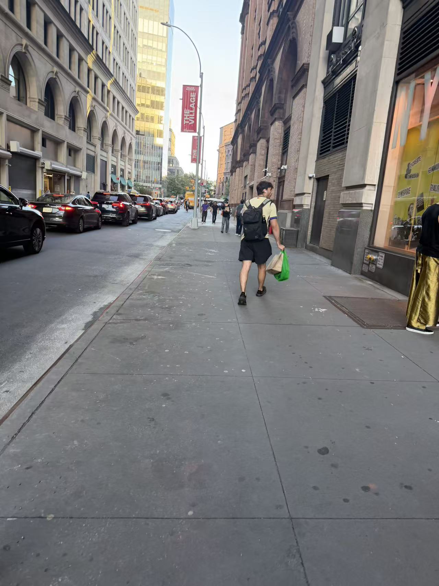

05. Walking to Class
After eating, I walked to class. Cars line the road on my left, and people walk ahead of me on the sidewalk. Red banners repeat along the street. The glass building catches the light, while the brick buildings beside me look darker.

Details Along the Way
- Arched windows on the left side of the street.
- A bright green shopping bag carried by a pedestrian.
- Red brake lights in the line of cars.